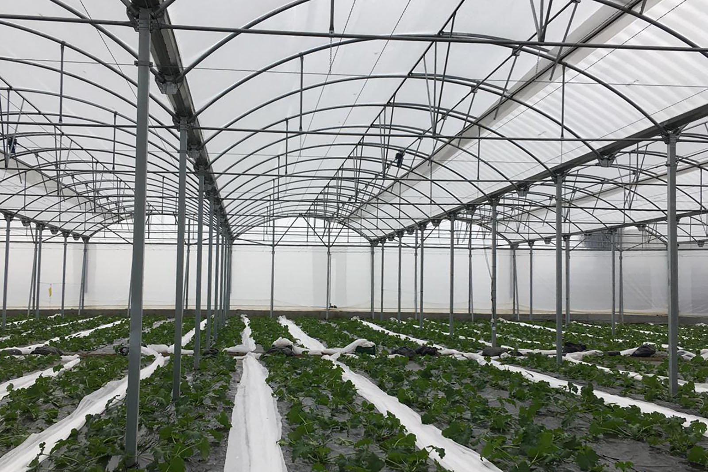
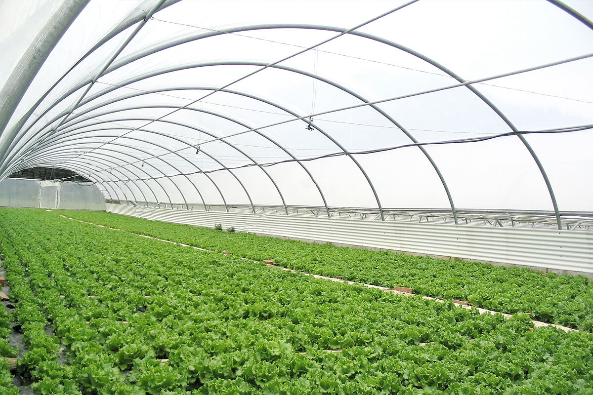
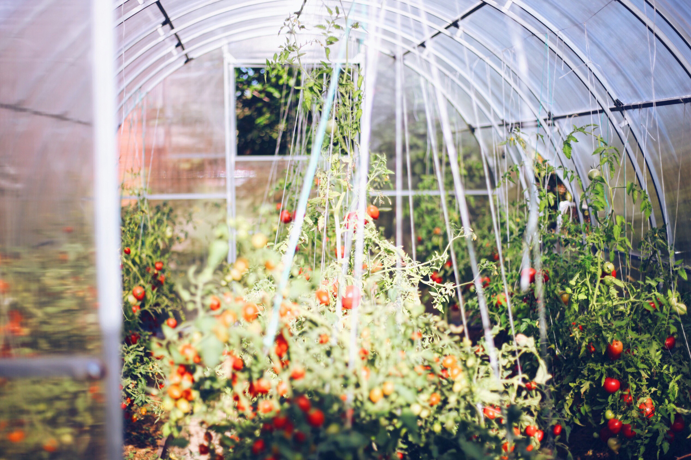

Nuestro servicio

1Agrofilm
Agrofilm es una marca que ofrece una gama de productos relacionados con la agricultura y la protección de cultivos, desde películas de acolchado hasta silobolsas, promoviendo prácticas agrícolas más sostenibles y la conservación de la calidad de los alimentos.
2Parafilm
Parafilm se utiliza en injertos de plantas como una herramienta para sellar y proteger la unión del injerto. Su flexibilidad, permeabilidad al aire y facilidad de uso lo hacen popular entre los jardineros y agricultores que realizan injertos para propagar o mejorar plantas.
3Guayas
las guayas en invernaderos cumplen varias funciones esenciales, desde proporcionar soporte a las plantas hasta facilitar sistemas de riego y control del clima, estas son tambien una de nuestras especialidades.
Galeria


